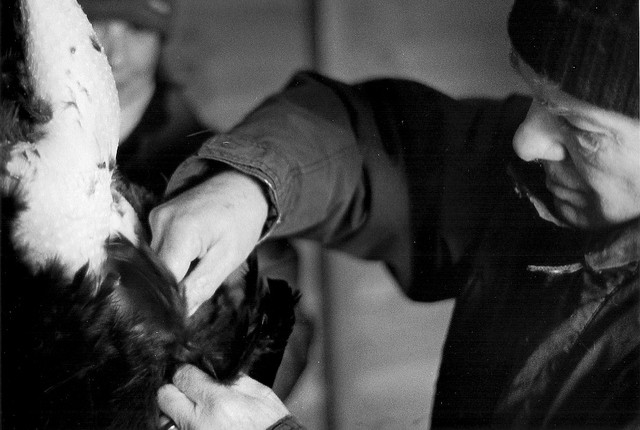

Rails: Don’t “pluck” Unnecessarily
Using pluck in Rails is both quick and efficient. But there are cases where it’s not what you want to use. For example if you’re selecting all users who have contacts, you might see something like this.
User.where(id: Contact.pluck(:user_id))Rails’ where method allows for Arrays of items for lookup so the above code might turn into something like User.where(id: [1,2,3]) after the pluck method hits the database to get back the values you requested. The problem with this is you’re hitting the database twice for something that it can handle on its own in one request.
Now pluck is an eager method that hits the database immediately when called. That and it doesn’t permit you to call the to_sql method on it. For example:
Contact.pluck(:user_id).to_sql
# (0.8ms) SELECT "contacts"."user_id" FROM "contacts"
# NoMethodError: undefined method `to_sql' for #<Array:0x00000009486fa8>Fortunately we can see the query being sent in the console so we can use this to compare with other queries. So we need to postpone this particular query and have it sent as part of the other SQL query we are generating. Fortunately we have an Arel equivalent method for this called project. Look at the SQL output from this and compare to what you see in the above example.
Contact.arel_table.project(:user_id).to_sql
# => "SELECT user_id FROM \"contacts\""As you can see we’re selecting the same column name from the same table. And yes it does come out slightly different, but it accomplishes the same task. Now with this we can change our first query to only hit the DB once using Arel.
User.where(
User.arel_table[:id].in(
Contact.arel_table.project(:user_id)
)
)
# User Load (1.6ms) SELECT "users".* FROM "users" WHERE "users"."id" IN (SELECT user_id FROM "contacts")
# => #<ActiveRecord::Relation [#<User...]>And now everything is performed in one query. Using project in this way will allow you to build more advanced queries without touching the database and only querying your data when you’re ready. Same data handled better.
Tip #1: Above I used Arel’s in method for inclusive finds, you can also use not_in for excluding records.
Tip #2: In the earlier examples of using pluck it would be more efficient to add distinct before pluck. This is because many of the records are duplicates and we only need the unique ones. e.g. Contact.distinct.pluck(:user_id)
UPDATE:
Thanks to a tip from djtal64 I’ve found you can perform this query more simply with the following and it defers to just one query just as we would like it.
User.where(id: Contact.select(:user_id))
# User Load (1.5ms) SELECT "users".* FROM "users" WHERE "users"."id" IN (SELECT "contacts"."user_id" FROM "contacts")
# => #<ActiveRecord::Relation [#<User...]>Also hat tip to for another way to accomplish this.
User.joins(:contacts).uniq
# User Load (3.3ms) SELECT DISTINCT "users".* FROM "users" INNER JOIN "contacts" ON "contacts"."user_id" = "users"."id"
# => #<ActiveRecord::Relation [#<User...]>The load times shown above are based on 455 contacts belonging to only 1 user. So the load times may be different for you depending on your situation.
Summary
pluck is great when you plan to process that data in Ruby/Rails, but if you’re handing the data back into the database you end up with a less efficient system which build Objects into Ruby memory which will also need to be garbage collected. So all things considered use pluck for stand alone queries, and Arel to combine multiple queries into one.
Please feel free to comment, share, subscribe to my RSS Feed, and follow me on twitter @6ftdan!
God Bless!
-Daniel P. Clark
Image by Andrew Bartram via the Creative Commons Attribution-NonCommercial 2.0 Generic License.
djtal64
May 13, 2015 - 5:49 am
Hi,
If I’m right Rails will do this automaticaly is you pass a scope in your second query.
For exemple :
User.where(id: Contact.unscoped)
Andrius Chamentauskas
May 13, 2015 - 7:52 am
I think that comes from squeel, active record doesn’t support that (yet)
djtal64
May 13, 2015 - 8:01 am
Nop it actually work like that (even in 3.2)
Daniel P. Clark
May 13, 2015 - 11:55 am
That does seem to do a subquery for us, but it’s not grabbing the correct field user_id.
It’s grabbing with “contacts”.”id”
What does work however is select
So that’s a perfect, and easier way, to understand it. Thanks for your tip! Now the only advantage Arel has hear is being able to continue to build the command out (like in a loop).
Lenense
May 13, 2015 - 4:28 pm
And a join between User and Contact?
User.joins(:contact)
or with unique users
User.joins(:contact).uniq
Daniel P. Clark
May 13, 2015 - 3:45 pm
I’ve been looking into joins and includes. In this case a joins doesn’t seem to work.
User.joins(:contact)
# ActiveRecord::ConfigurationError: Association named 'contact' was not found on User; perhaps you misspelled it?
The joins seems to work in the other direction, but it’s not what I want in this case. I may be able to figure it out with Arel.
Daniel P. Clark
May 13, 2015 - 4:51 pm
Thanks for the tip! The plural of contact works
uniq or distinct is required for this use case.
Lenense
May 13, 2015 - 4:53 pm
Yeah!
If you have
Class User < ActiveRecord::Base
has_many :contacts
end
it has to be plural
Don't forget to add an index to user_id in contacts table
Thanks!
manastojones
May 15, 2015 - 9:34 am
User.where(id: Contact.select(:user_id))
Ariel is a bit verbose for that.
mchlfhr
June 14, 2015 - 6:48 pm
Hi,
Daniel, thanks for this post. This was for me one of this “wow – he is right moments” 😉
But I think there is an issue with such kinds of subqueries (at least on Postgres 9.2 and Rails 4.0.13). May anyone have also seen it:
It works very well as long I have only one subquery in my where clause. As soon I add a second one like:
Activity.where(user_id: User.friendships.select(:friend_id), event_id: User.events.select(:id))
It breaks as ActiveRecord tries to use the same replacer in the subqueries “$1” in the resulting SQL:
SELECT “activities”.* FROM “activities” WHERE (user_id IN (SELECT friend_id FROM “friendships” WHERE “friendships”.”user_id” = $1) AND trackable_id IN (SELECT event_id FROM “participations” WHERE “participations”.”user_id” = $1)) [[“user_id”, 1], [“user_id”, 1]]
PG::ProtocolViolation: ERROR: bind message supplies 2 parameters, but prepared statement “a2” requires 1
=> Has anyone made the same observation?
mchlfhr
June 18, 2015 - 6:36 pm
Just installed Rails 4.2.1 and did the same tests: There it works!